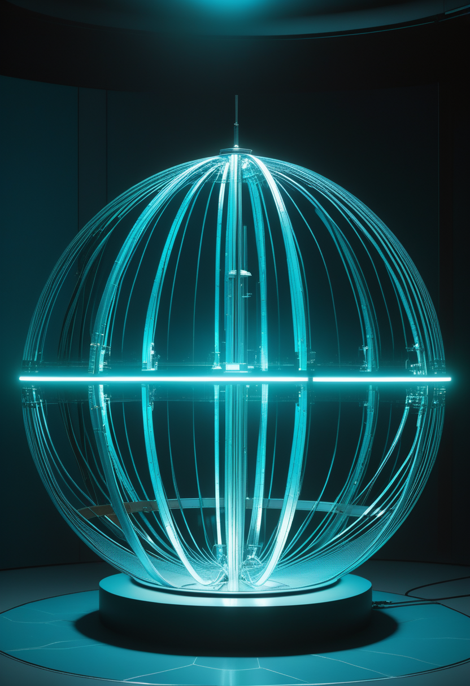
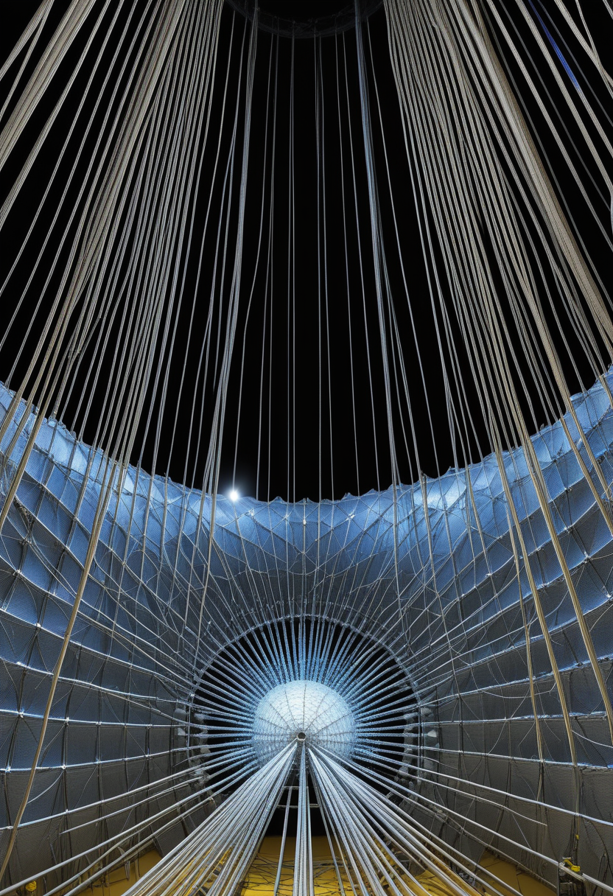
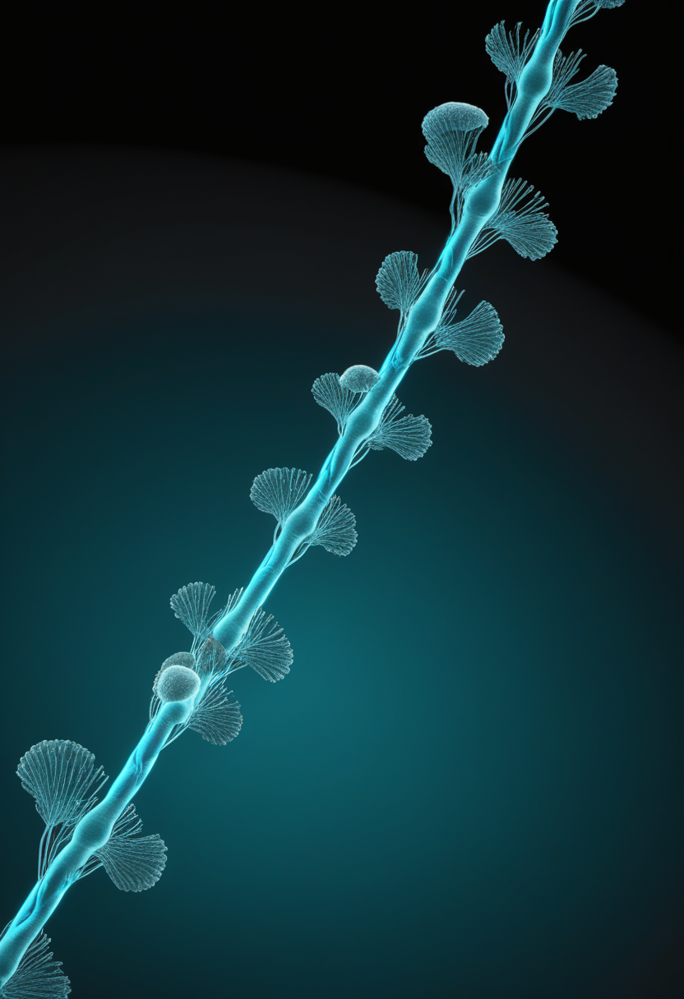
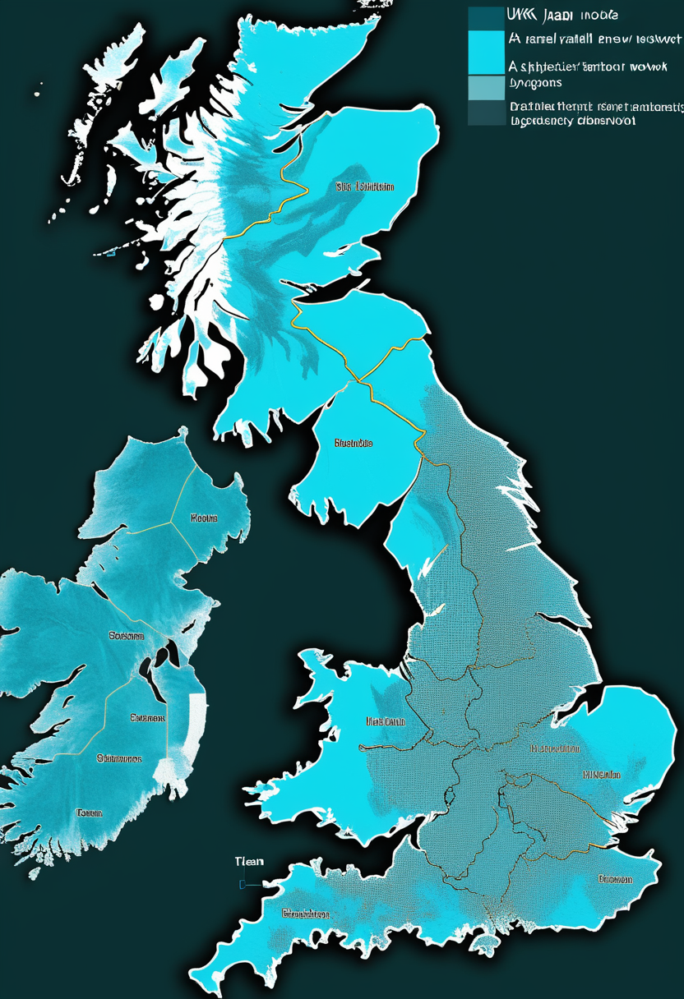
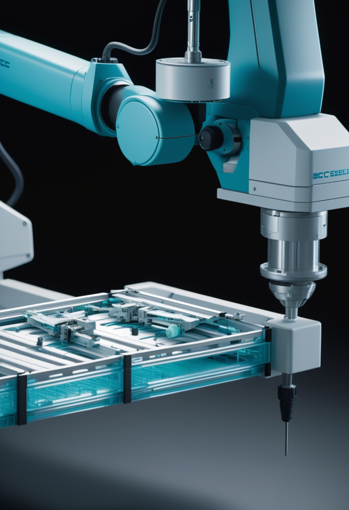
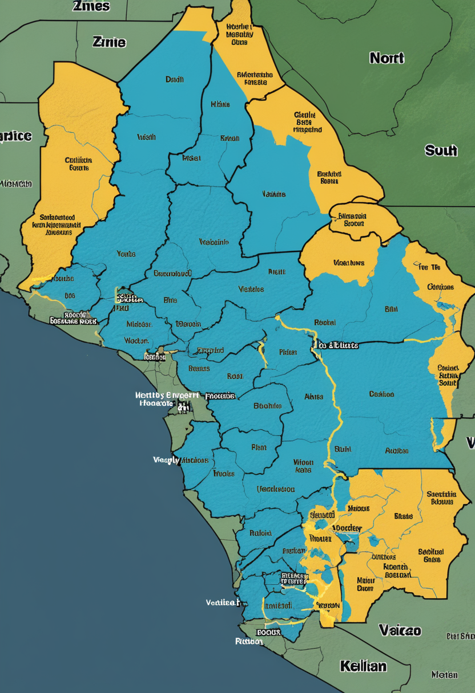
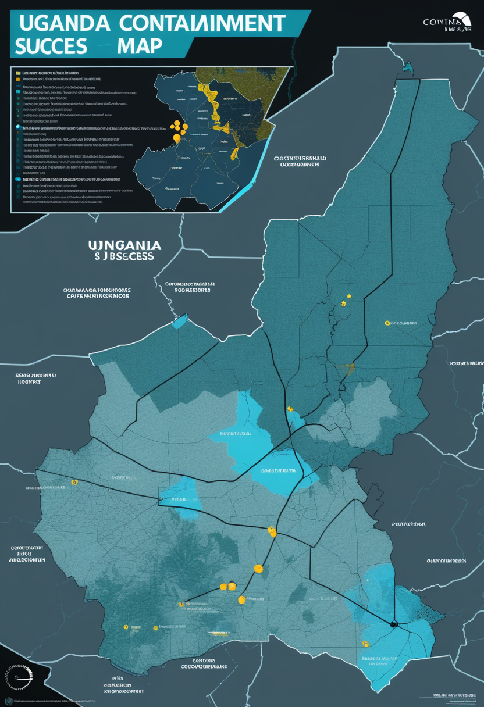
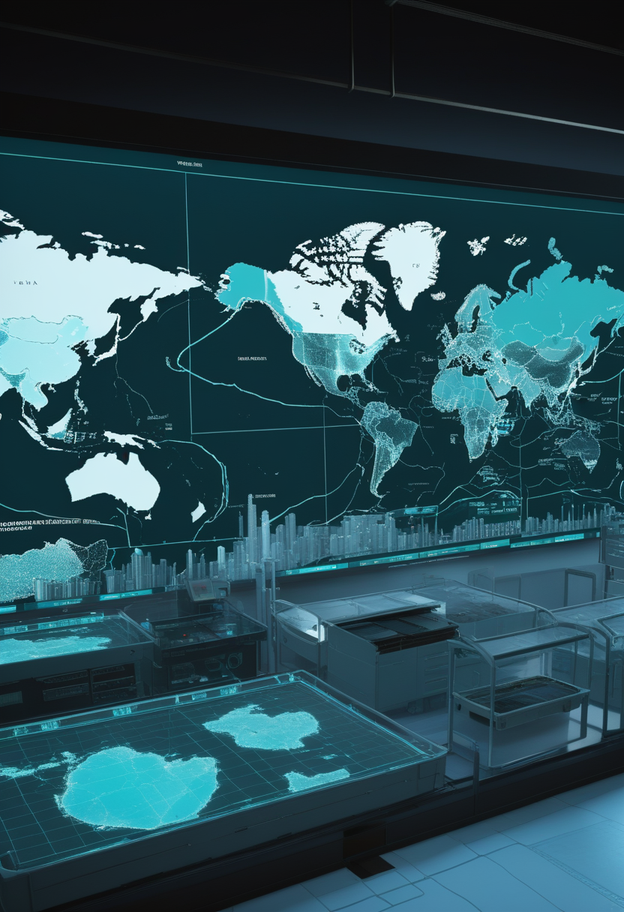
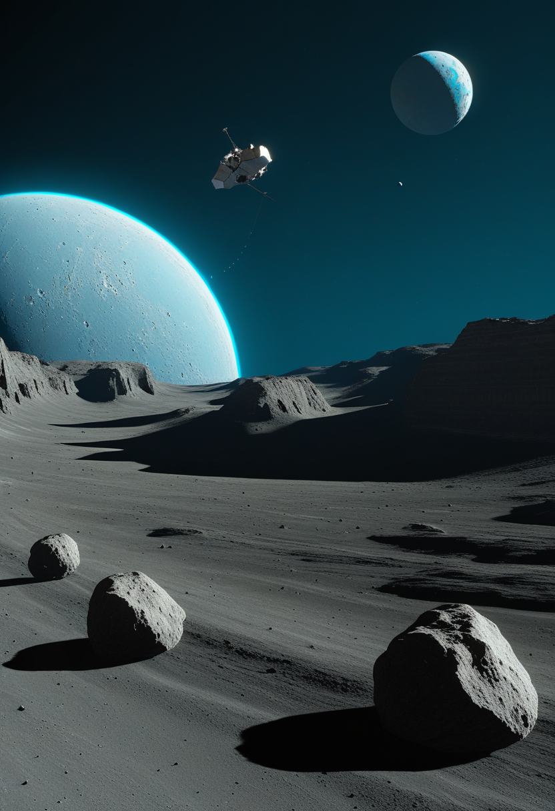
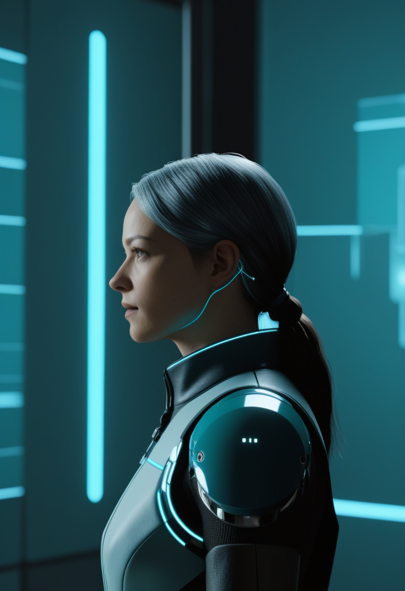

中国・JUNOが59日分の宇宙の幽霊粒子データを解析し、ニュートリノ振動パラメータを過去全実験比1.6倍の精度で測定してNatureの表紙を飾った。同じ週にオックスフォードが量子コンピュータを堅牢化する「シュレーディンガーの猫」新状態を生成し、天問2号はカモオアレワを周回して7月4日のサンプル採取に備える。DRCエボラは808確定例で封じ込まれず、ウガンダは逆に13日連続ゼロで「模範的封じ込め」とWHOに称えられた。Scholar RockのアピテグロマブはFDA PDUFA 9月30日の審査日を待ち、Neuralinkは21名の実績を足場に高容量生産・自動化手術移行を宣言する。脳デジタルツインは「遠縁の双子」の段階にある木曜日、問いながら世界は回る。

中国・広東省カイピン市郊外の地下700mに建設されたJiangmen Underground Neutrino Observatory（JUNO）が、2025年8〜11月に取得した59日分のデータを解析し、ニュートリノ振動パラメータを過去数十年間の複数実験の合算より1.6倍精密に測定することに成功した。成果はNature誌の表紙論文として2026年6月11日に掲載された（CGTN・ScienceDaily確認）。広東省地下700mに建設された2万トンの液体シンチレーター球形タンク──直径35mの容器に約18,000本の光電子増倍管を張り巡らせた装置は、原子炉由来の反電子ニュートリノが数キロメートル伝播する間にどれほど「種類の変化（振動）」を起こすかを精密に捉えた。ニュートリノの質量階層（どの世代が最も重いか）の決定的解明への射程に入ったこの成果は、50年以上を貫く素粒子物理学の標準モデルを新たな精度で問い直す、中国発の物理学の凱旋でもある。

Scholar RockのアピテグロマブはFDA BLA（生物製剤承認申請）が受理済みで、PDUFA行動日は2026年9月30日と設定された。SMN標的療法（ヌシネルセン・リスジプラム・ゾルゲンスマ）との併用で用いる「筋肉標的療法の第一号」として、第3相PIVOTALトライアルで統計的に有意な運動機能改善を実証した唯一の薬剤だ。Fast Track・希少疾患・優先審査・小児希少疾患の各種指定を取得しており、エムグロバルトの開発中止（2026年3月）によって競合が消えた今、この一本が秋に歴史的な「可否」を迎える。SMA患者コミュニティにとって9月30日は単なる審査日ではなく、SMN治療の先に「筋肉をターゲットにする」という次の地平が開くかどうかの分岐点だ。
Springer Nature Linkに掲載された論文（2025年）は、日本人SMA患者を対象とするリスジプラムの12ヶ月間市販後調査の中間解析を報告した。新たな安全上の懸念は認められず、実臨床での良好な忍容性が確認された。経口投与の簡便さと日本人患者での長期安全性データの蓄積により、国内SMA標準治療への定着が着実に進んでいる。この12ヶ月データは、製薬企業のトライアルではなく実臨床からの証拠として、患者・家族・医師の判断を支える重要な根拠となる。アピテグロマブがFDA判断を待つ一方で、既存の三療法による基盤治療の安全性エビデンスは日々積み上がっている。

PMCに掲載された英国のSMA新生児スクリーニング（NBS）評価研究は、モデリング手法を用いて継続評価の優先課題を特定した。早期発見・早期治療が予後を飛躍的に改善するというエビデンスは蓄積を続けており、英国・日本を含む各国でのスクリーニング普及加速が求められている。「運動神経が残っている段階での介入」こそが最大の転帰改善をもたらすというSMA医療の核心は、スクリーニング普及の最も強力な動機となっている。日本では任意NBSが38都道府県で実施済みだが対象は全新生児の約20%にとどまり、英国の研究知見が普及論議に加わる形だ。
9月30日のFDA判断を待つアピテグロマブ、12ヶ月の実臨床安全性が積み上がるリスジプラム、英国・日本で広がるSMA新生児スクリーニング ── 「早く・広く・深く」という三方向の進歩が、SMAの地図を塗り替え続けている。

Elon MuskはXで「Neuralinkは2026年にBCIデバイスの高容量生産とほぼ完全自動化された手術工程への移行を開始する」と表明した。デバイスのスレッドが硬膜を貫通可能になることで硬膜除去が不要となり、手術の侵襲性が大幅に低下する見込みだ。2026年6月時点で「Neuralnauts」と呼ばれる累計21名への移植が完了しており、ALS患者による40WPM入力やロボットアーム制御が実証されている。FDAの画期的医療機器指定（Speech Restoration）も取得済みで、個人実験段階から量産段階へ向けた最初の宣言として業界の注目を集めている。
2026年6月1〜4日にモロッコ・マラケシュで開催されたACM主催のEye Tracking Research & Applications（ETRA）で、専用赤外線ハードウェア不要の「AIウェブカム視線追跡」が普及段階に達したとする発表が相次いだ。標準カメラだけでほぼすべての端末で実装可能とする知見が共有され、ALS患者向けデジタルインターフェース操作や後天性脳損傷後の認知評価への応用が複数報告された。倫理・プライバシー声明の義務化も決定。ハードウェア障壁がなくなることで、専用デバイスが不要な文脈での視線入力インターフェースの普及が一気に加速しうる転換点だ。
TechTimesの2026年5月報告によると、研究者らがBCIデバイスへのサイバー攻撃手法を体系的に文書化した。BCIが商用化された場合、ハッキングにより感覚・運動機能が不正操作されるリスクが生じると警告されている。Neuralink・Synchron等の主要企業への積極的なセキュリティ審査の導入と、規制当局によるサイバーセキュリティ基準の策定が急務だ。「人体とデジタルが直結する装置」へのハッキングは、データ漏洩とは次元の異なる身体的リスクを孕む。商用化加速と規制整備の速度差が広がっている。
Neuralinkが量産移行を宣言し、AIウェブカムが視線追跡の民主化を宣言し、研究者はBCIへのハッキングリスクを文書化する ── 自由の拡張と脆弱性の露出が同じ速度で進む2026年のBCI最前線。

WHO Disease Outbreak Newsによれば6月14日時点のDRCエボラ累計は808確定例・192死者・363名が隔離入院中。前週比26例・11死者の増加で週100例超のペースに変わりはない。最多被害のイトゥリ州738例（20保健区）に加え、北キブ67例・南キブ3例と拡大域が広がっている。ブンディブギョ型向けの承認ワクチン・特異的治療薬がない点が対応を困難にしており、WHOのPHEIC（国際的公衆衛生上の緊急事態）が継続している。6/16のWHO DON607がECDCと合わせて最新状況を確認した。

ウガンダでは6月16日時点で累計19確定例・2死者のまま新たな患者が6月5日以降13日間報告されていない。WHOはこれを「越境封じ込めの模範事例」として評価し、UN Newsも大きく取り上げた。PHEIC（国際的公衆衛生上の緊急事態）が継続するDRCと対照的に、接触者追跡と地域封鎖の迅速な実施が奏功したとみられる。疾患を持ちこんだ後の迅速封じ込めは、輸出例対応の標準として今後の参照事例になる可能性がある。

WHOは財政計画の見直しで重要プログラムを縮小しており、感染症サーベイランス能力の低下が懸念されている。GAVIの専門家分析では、H5N1がヒト-ヒト感染へ適応する証拠が出た場合と、はしか免疫低下を2026年の主要脅威として挙げた。現在はエボラ対応に資源が集中しているため、他の感染症リスクが後景に退く構造的問題が続く。「緊急対応」と「常時備え」を同時に維持する財政余力が国際公衆衛生体制から削られている状況は、次の脅威が出たときの初動能力に直接影響する。
DRC808例でPHEIC継続、ウガンダ13日連続ゼロで模範とされ、WHO財政縮小が次の脅威への備えを静かに削る ── 封じ込めの成否と備えの劣化が同時進行する基盤の今。
中国・江門地下ニュートリノ観測所（JUNO）が2025年8〜11月に収集した59日分のデータを解析し、ニュートリノ振動パラメータを過去数十年間の複数実験の合算より1.6倍精密に測定することに成功した。成果はNature誌の表紙論文として2026年6月11日に掲載（CGTN・ScienceDaily確認）。広東省カイピン市郊外の地下700mに建設された2万トンの液体シンチレーター球形タンクを用いており、中国発の素粒子物理学が世界の最前線に立ったことを示す画期的な成果となった。ニュートリノの質量階層決定への道が一段と近づいた。

CNSAの天問2号は2026年6月7日に近地球小惑星カモオアレワ（469219）への軌道投入に成功し、現在周回観測を実施中。7月4日からサンプル採取を開始し、2027年にゴビ砂漠に帰還する予定だ。Nature Communications論文では、カモオアレワの表面がイトカワ型の岩石組成を持ちつつもより高度に宇宙風化していることが示され、従来の「月破片起源説」に疑義を呈している。月由来なのか別の始源天体なのかは、帰還サンプル分析が明らかにする。
オックスフォード大学の物理学者チームが、それ自体が高度に量子な成分を用いた新型の「シュレーディンガーの猫」的量子状態の生成に成功した。この進展は従来のアプローチより堅牢な量子コンピュータ実現への新たな経路を開くと評価されている。2026年量子科学技術国際年（IYQ）の中でも注目の成果のひとつとなっており、量子誤り訂正の精度向上への貢献が期待される。量子コンピュータの弱点だったノイズ耐性を高める理論的枠組みの実証として、計算科学に新しい層が加わった。
JUNOが幽霊粒子の謎を1.6倍の解像度で押し広げ、天問2号がカモオアレワに問いを立て、オックスフォードが量子コンピュータの堅牢性を一段上げた ── 今週の科学は、見えないものを見る精度の競争だ。
Singularity Hubの2026年4月報告によれば、脳デジタルツイン研究の現在の全脳モデルは各脳固有の個人差を再現できず「遠縁の双子」段階にとどまる。SmartEMなどのコネクトミクス技術と大規模スパイキングニューラルネットワークの組み合わせが突破口として期待され、スタートアップEon Systemsは仮想ハエの行動をシミュレートするビデオを公開し初歩的な実装を示した。「あなたの脳を忠実に複製したデジタル版」はまだ存在しない。コネクトミクスの解像度と個人差の記述が揃った時、その先に何があるかは、まだ科学が問いの形のままで持っている段階だ。
Mind Transfer社ブログが2026年にまとめた神経科学者の評価では、ヒトニューロンのシリコン完全複製は2026年時点で実現しておらず、意識の「ハード問題」が解決されない限り真のデジタル意識は不可能とする見解が主流だ。生きたままの脳をナノメートル解像度でスキャンするには物理的ブレークスルーが必要で、現実的な実現時期の見通しは立っていない。これを「できない」と断じるのではなく「まだ問いの形のまま」と整理すると、進歩の文脈が見えてくる ── その問いに向かって歩いている科学者たちは、着実に前進している。

arXivの2025年12月プレプリントによれば、AIが生成した「将来の自己のシミュレーション」を提示することで人の長期的意思決定が改善されることが実験的に示された。デジタルツインを自己認知や行動変容に活かす応用は、マインドアップローディングのような哲学的問題とは切り離して実用化が進んでいる。「完全な脳コピー」という遠大な問いの手前で、「AIが描く未来の自分」という道具が意思決定と健康行動を変え始めている。大きな夢への道の途中に、今すぐ使える実用が育っている。
脳デジタルツインは「遠縁の双子」に留まり、マインドアップローディングは「まだ不可能」と科学者は言う。だが将来の自己を映すAIツインは今すぐ意思決定を変えている ── 人間のデジタル化は、壮大な問いと地に足のついた実用の両輪で進んでいる。
今日の世界は、JUNO初成果がNatureの表紙を飾って7日目の木曜日だった。地下700mの2万トンが幽霊粒子の振動を1.6倍の精度で測り直し、オックスフォードが「シュレーディンガーの猫」の新しい形を生み出し、天問2号は小惑星の起源をめぐる問いとともに7月4日のサンプル採取を待っている。DRCエボラは808確定例で止まらず、ウガンダは13日連続ゼロで模範と呼ばれ、WHO財政の縮小が次の脅威への備えを静かに削っている。Scholar Rockのアピテグロマブは秋のFDA判断まで単独候補として待ち、Neuralinkは21名の実績から高容量生産に踏み出し、AIウェブカムが視線追跡の専用デバイスを不要にしようとしている。脳デジタルツインは「遠縁の双子」の段階に留まり、マインドアップローディングは依然として不可能と評価され、それでもAIが描く「未来の自分」は今すぐ意思決定を変え始めている。
木曜日の便り。見えないものを測る精度が一段上がった日、世界はまた少し前に動いていました。おやすみなさい。